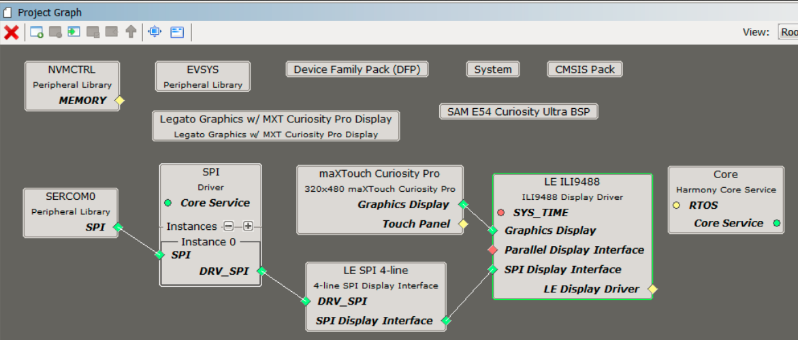
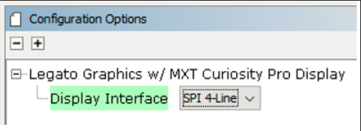
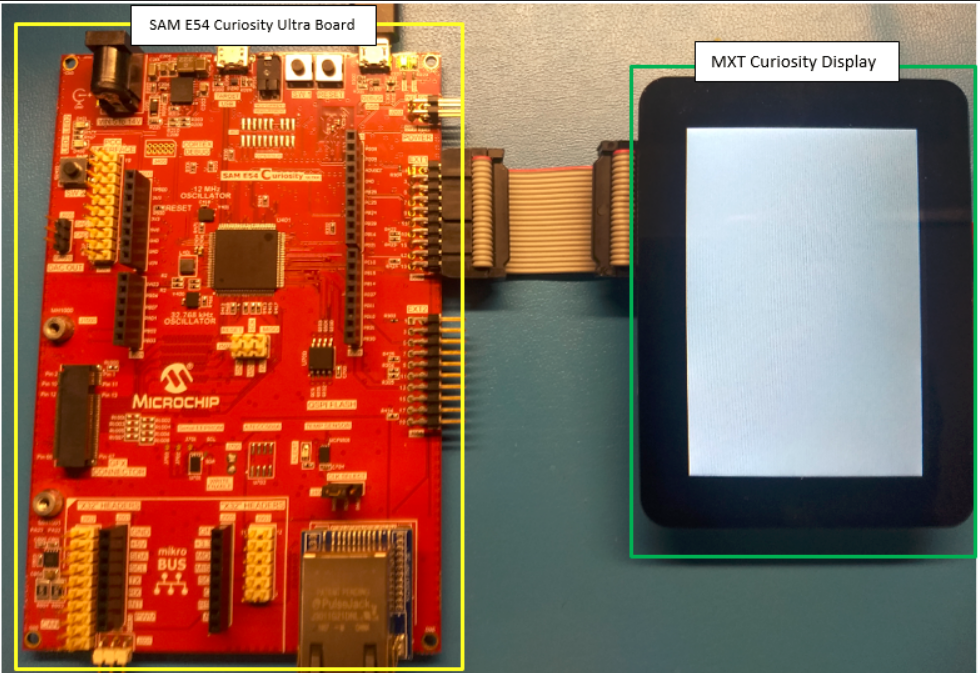
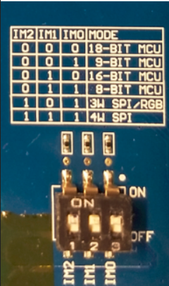

|
MPLAB® Harmony Graphics Suite
|
|
MPLAB® Harmony Graphics Suite
|

The application uses the Legato Graphics Driver Abstraction APIs to render text on a label widget, an image and a user-interactive button to the screen. Touching the button on the screen will show the button being pressed.
The block diagrams below show the various software and hardware blocks used in this application:

The Project Graph diagram below shows the Harmony components that are included in this application. Lines between components are drawn to satisfy components that depend on a capability that another component provides.
Adding the SAM E54 Curiosity Ultra BSP and Legato Graphics w/ MXT Curiosity Pro Display Graphics Template component into the project graph will automatically add the components needed for a graphics project and resolve their dependencies. It will also configure the pins needed to drive the external peripherals like the display and the touch controller.
To configure the project for an SPI Interface, set the Display Interface setting for the Legato Graphics w/ PDA TM4301B Display component to SPI 4-Line.

The parent directory for this application is gfx/apps/blank_quickstart. To build this application, use MPLABX IDE to open the gfx/apps/blank_quickstart/firmware/blank_qs_e54_cu_cpro_spi.X project file.
The following table lists configuration properties:
| Project Name | BSP Used | Graphics Template Used | Description |
|---|---|---|---|
| blank_quickstart_e54_cu_cpro_spi.X | SAM E54 Curiosity Ultra BSP | Legato graphics w/ maXTouch Curiosity Pro Display | SAM E54 Curiosity Ultra w/ maXTouch maXTouch Curiosity Pro display via 8-bit parallel interface |
**_NOTE:_** This application may contain custom code that is marked by the comments // START OF CUSTOM CODE ... and // END OF CUSTOM CODE. When using the MPLAB Harmony Configurator to regenerate the application code, use the "ALL" merging strategy and do not remove or replace the custom code.
The final setup should be:

Set the IM switches on the MXT Curiosity Pro Display to IM[2:0] = 111b.

Once the board is powered on, the application will run and show the following image on the display panel.

 1.8.18
1.8.18